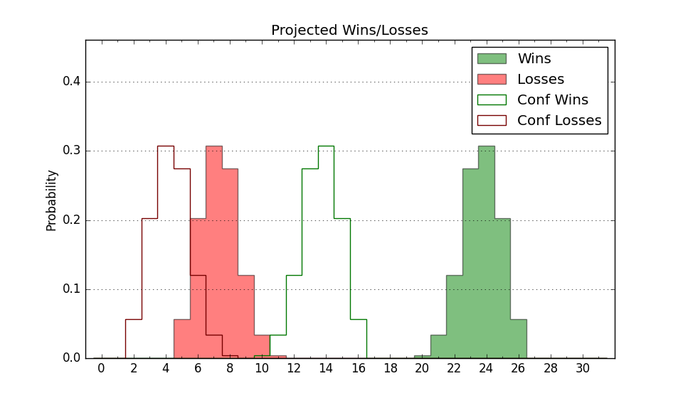

| Home | Game Probabilities | Conferences | Preseason Predictions | Odds Charts | NCAA Tournament |
| City: | Boca Raton, Florida | |
| Conference: | American (2nd)
| |
| Record: | 8-2 (Conf) 18-5 (Overall) | |
| Ratings: | Comp.: 18.9 (31st) Net: 18.8 (35th) Off: 117.8 (22nd) Def: 99.0 (76th) SoR: 72.4 (35th) |
| Remaining | ||||||
|---|---|---|---|---|---|---|
| Date | Opponent | Win Prob | Pred. | |||
| 2/11 | @ Wichita St. (155) | 76.2% | W 79-70 | |||
| 2/15 | Temple (237) | 95.5% | W 84-62 | |||
| 2/18 | @ South Florida (109) | 64.3% | W 77-73 | |||
| 2/22 | SMU (41) | 66.4% | W 76-71 | |||
| 2/25 | @ Memphis (77) | 52.6% | W 81-80 | |||
| 3/2 | Tulane (104) | 85.0% | W 90-77 | |||
| 3/6 | @ North Texas (68) | 49.0% | L 65-66 | |||
| 3/9 | Memphis (77) | 79.1% | W 85-75 | |||
| Previous | Game Score | |||||
| Date | Opponent | Win Prob | Result | Off | Def | Net |
| 11/8 | (N) Loyola Chicago (111) | 77.3% | W 75-62 | -4.0 | 10.3 | 6.3 |
| 11/14 | Eastern Michigan (339) | 98.7% | W 100-57 | 21.1 | -0.9 | 20.2 |
| 11/18 | Bryant (147) | 90.7% | L 52-61 | -47.2 | 5.5 | -41.7 |
| 11/23 | (N) Butler (48) | 56.1% | W 91-86 | 18.9 | -11.1 | 7.8 |
| 11/24 | (N) Texas A&M (39) | 51.2% | W 96-89 | 35.3 | -21.8 | 13.4 |
| 11/26 | (N) Virginia Tech (63) | 62.2% | W 84-50 | 3.0 | 41.2 | 44.3 |
| 11/30 | Liberty (110) | 86.1% | W 83-58 | 9.6 | 10.7 | 20.3 |
| 12/2 | College of Charleston (127) | 88.3% | W 90-74 | 3.4 | -0.9 | 2.5 |
| 12/5 | (N) Illinois (14) | 35.6% | L 89-98 | 7.7 | -16.6 | -9.0 |
| 12/13 | FIU (294) | 97.5% | W 94-60 | -1.4 | 9.7 | 8.3 |
| 12/16 | (N) St. Bonaventure (71) | 64.8% | W 64-54 | -21.1 | 29.1 | 8.0 |
| 12/23 | (N) Arizona (3) | 19.9% | W 96-95 | 2.1 | 7.8 | 9.9 |
| 12/30 | @Florida Gulf Coast (250) | 87.4% | L 68-72 | -17.0 | -10.9 | -27.9 |
| 1/2 | East Carolina (178) | 93.4% | W 79-64 | 5.0 | -11.5 | -6.5 |
| 1/6 | @Charlotte (97) | 59.6% | L 68-70 | -0.5 | -6.9 | -7.3 |
| 1/11 | @Tulane (104) | 62.4% | W 85-84 | -2.5 | -6.3 | -8.8 |
| 1/14 | UAB (123) | 87.8% | W 86-73 | -1.6 | 4.3 | 2.7 |
| 1/18 | Wichita St. (155) | 91.6% | W 86-77 | 3.8 | -16.1 | -12.3 |
| 1/21 | @UTSA (278) | 90.2% | W 112-103 | 12.2 | -21.4 | -9.2 |
| 1/24 | @Rice (211) | 84.1% | W 69-56 | -14.0 | 14.5 | 0.6 |
| 1/28 | North Texas (68) | 76.6% | W 66-63 | -0.4 | -6.2 | -6.7 |
| 2/3 | Tulsa (188) | 93.7% | W 102-70 | 11.2 | 2.3 | 13.5 |
| 2/8 | @UAB (123) | 67.8% | L 73-76 | -18.8 | -2.3 | -21.1 |
| Stats & Trends | |||||
|---|---|---|---|---|---|
| Current | Day | Week | Month | Season | |
| Composite | 18.9 | +0.1 | -0.8 | -3.0 | -2.4 |
| Comp Rank | 31 | +1 | -4 | -11 | -8 |
| Net Efficiency | 18.8 | +0.1 | -0.9 | -3.1 | -- |
| Net Rank | 35 | -2 | -8 | -14 | -- |
| Off Efficiency | 117.8 | -0.1 | -1.1 | -0.9 | -- |
| Off Rank | 22 | -1 | -5 | -8 | -- |
| Def Efficiency | 99.0 | +0.1 | +0.3 | -2.2 | -- |
| Def Rank | 76 | +4 | +6 | -7 | -- |
| SoS Rank | 88 | -8 | -3 | -42 | -- |
| Exp. Wins | 23.7 | +0.0 | -0.9 | -0.2 | -0.1 |
| Exp. Conf Wins | 13.7 | +0.0 | -0.9 | -0.2 | -0.6 |
| Conf Champ Prob | 43.6 | -3.4 | -22.6 | -7.5 | -15.4 |

| Advanced Stats | ||
|---|---|---|
| Stat | Value | Rank |
| Off Eff FG % | 0.563 | 27 |
| Off Ast Ratio | 0.159 | 74 |
| Off ORB% | 0.340 | 30 |
| Off TO Rate | 0.134 | 82 |
| Off FT Ratio | 0.359 | 106 |
| Def Eff FG % | 0.480 | 90 |
| Def Ast Ratio | 0.114 | 17 |
| Def ORB% | 0.267 | 141 |
| Def TO Rate | 0.159 | 102 |
| Def FT Ratio | 0.248 | 18 |